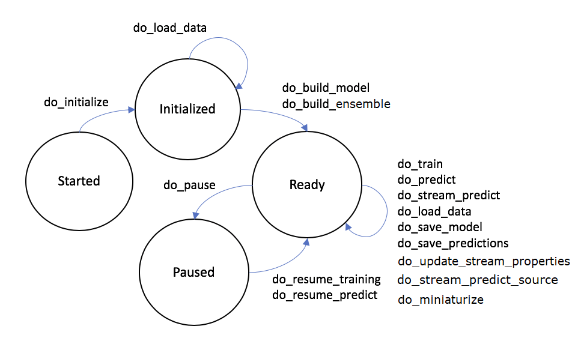

Guide¶
Model Interface¶
A MISTK model implements the mistk.model.AbstractModel class. This class provides a set of abstract methods that represent the model lifecycle and must be implemented by the new model. Ultimately, these methods form the core of the web endpoint service that is made available for every model implementation.
- do_initialize (objectives: list, props: dict, hparams: dict)
Called once the endpoint service has launched. This would typically be the first call made to the service. Perform any general setup and initialization.
- param objectives
A list of model objectives intended to aid in its setup and initialization. Possible values are: ‘training’, ‘prediction’, ‘streaming_prediction’, ‘generation’, ‘transfer_learning’.
- param props
A dictionary of settings or configuration values that are passed from the ecosystem, but are not considered model hyperparameters.
- param hparams
A dictionary of hyperparameters that are used by the model.
- do_load_data (dataset_map: dict)
Instructs the container to load training, testing, or generation data (or at least record in memory where the data is) from the supplied paths.
- param dataset_map
A dictionary that maps string keys {train, test, generation} to a MistkDataset object that contains information on the dataset to load. The objectives values for this model determines which keys are present in the map (i.e. a model with only a training objective should not depend on a ‘test’ key to be present).
The MistkDataset values will require the following fields:
object_info: A dictionary that stores metadata information for the dataset. Only the ‘name’ and ‘kind’ fields are required, all other fields are optional.
data_path: A string containing the path to the dataset root folder
modality: A string with value image, audio, video, or text
format: A string containing the name of the format of this dataset
- do_build_model (path=None)
Instructs the service to build all necessary data structures given the architecture and selected hyperparameters.
- param path
The path to the model file or checkpoint that should be loaded. Defaults to None if no file was specified in this model’s definition.
- do_train ()
Perform training with the previously supplied data.
- do_predict ()
Perform predictions with the previously supplied data.
- do_generate ()
Perform generations with the previously supplied data.
- do_pause ()
Pause the current training or testing.
- do_resume_training ()
Resume the previously paused training.
- do_resume_predict ()
Resume the previously paused predictions.
- do_save_predictions (dataPath)
Save the model predictions to the supplied data path. The predictions should be saved as CSV with each row in the following format:
id,label[,confidence][,bounds]
- param dataPath
The path to which the predictions should be saved.
- do_save_generations (dataPath)
Saves the generated media produced by the model to the supplied data path.
- param dataPath
The path to which the generations should be saved.
- do_stream_predict (data_map: dict, details: bool)
Perform predictions on the input dict of id’s to base64 encoded data and return a dict of id’s to predicted values. The underlying format of the base64 encoded data should be the native input format for the model.
- param data_map
A dict of id’s to base64 encoded data.
- param details
Optional parameter for the model to provide additional details in the returned dict. Default value is False.
- return
A dict of id’s to predicted values. The id ‘details’ is a keyword used for additional details provided in Markdown or HTML.
- do_update_stream_properties (props: dict)
Updates the stream prediction properties for subsequent stream predict calls.
- param dict
A dict that can be used for streaming properties.
- do_save_model (path)
Save a checkpoint of the model to the supplied data path. Format of the saved file(s) is at the discretion of the model. The infrastructure associates this checkpoint with this model.
- param path
The path to which the model should be saved.
- do_terminate ()
Prepare for application termination.
The Model State Machine¶
Model implementations follow a workflow lifecycle based on state machine transitions. The underlying MISTK infrastructure ensures that only legal transitions from one state to another can be made and that the appropriate model methods are called during those transitions. The image below illustrates the high-level state machine transitions and the model methods that may be called between them.
The ‘Terminated’ state (and associated method ‘do_terminate’) is not pictured but is a valid transition from any of the states depicted above. Note that an internal ‘Failed’ state will be entered if the model implementation throws an exception. No further model activities are permitted from the ‘Failed’ state.
If a model workflow enters the ‘Failed’ state, then the workflow will need to be restarted from the beginning. This is required in order to support various machine learning technologies (ie. Tensorflow) that may not have a methodology to reset/resume their state after a critical failure.
Initializing a Model¶
Initialization of a model loads the hyperparameters and model properties associated with the model. Hyperparameters are defined by the algorithm that a model is based on. Model properties are defined by a specific implementation of an algorithm (ie. a PyTorch implementation of Densenet may have different properties than a Tensorflow implementation). Below are sample hyperparameters and model properties dictionaries that can be passed to a model implementation’s ‘do_initialize’ method.
Hyperparameters¶
- {
‘learning_rate’: 0.001, ‘weight_decay’: 0.004 ‘momentum’: 0.9
}
Model Properties¶
- {
‘arch’: ‘densenet’, ‘num_labels’: 1000, ‘model_load_file’: ‘checkpoint.pth’
}
Loading Data¶
When loading data into a model instance using the do_load_data(dataset_map) method inherited from ‘AbstractModel’, the dataset_map parameter must include sufficient information for each dataset mapped to an objective {train, test, generate}. The required fields include ‘object_info’, ‘data_path’, ‘modality’, and ‘format’ (Described in the Model API method documentation previously) An example dataset map is provided below:
{
"train": {
"object_info": {
"name": "image_training_set",
"kind": "MistkDataset"
},
"data_path": "/path/to/data",
"modality": "image",
"format": "jpg"
},
"test": {
"object_info": {
"name": "image_testing_set",
"kind": "MistkDataset"
},
"data_path": "/path/to/data",
"modality": "image",
"format": "jpg"
},
"generation": {
"object_info": {
"name": "image_generation_set",
"kind": "MistkDataset"
},
"data_path": "/path/to/data",
"modality": "text",
"format": "raw"
}
}
The dataset for generations should contain files that indicate the targets for generation.
Please note, that when using the RESTful API directly, where the user would be submitting the JSON via the ‘load_data’ API call, the JSON keys would need to be in camelcase format rather than underscored (ie. object_info becomes objectInfo).
Model Status¶
Model implementations are encouraged to report status pertaining to their current workflow state back to the MISTK infrastructure by calling the update_status(dict) method inherited from AbstractModel (note this method is intended to be called by the model, not overridden as the methods above). This method takes a dictionary object of key-value pairs defined by the model. For example, the logistic regression model below updates its status with the number of samples fit during training and the number of samples predicted during testing.
Predictions and Ground Truth¶
Model prediction output from the do_save_predictions method as well as corresponding dataset ground truth should be CSV-formatted as follows:
id,label[,confidence][,bounds]
The id field can be arbitrary as long as predictions and ground truth use the same values. All columns except id may contain whitespace-separated values as necessary. The confidence probabilities and bounds values are optional.
Example Prediction CSV line for only id and label:
mnist-test-00001,7
Example Prediction CSV line for id and a single label, confidence, and bounds:
ILSVRC2012_val_00000163,n03733805,.9,84 0 433 278
Example Prediction CSV line for id and a single label, no confidence, and bounds:
ILSVRC2012_val_00000163,n03733805,,84 0 433 278
Example Prediction CSV line for id and multiple (3) label, confidence, and bounds:
ILSVRC2012_val_00004833,n03733805 n03733805 n03733805,.9 .8 .8,85 93 350 355 301 306 421 428 0 5 469 373
Example of incorrect Prediction CSV line where addition bounds and confidence will be ignored due to only 1 label:
ILSVRC2012_val_00004833,n03733805,.9 .8 .8,85 93 350 355 301 306 421 428 0 5 469 373
Example Model¶
The following example code implements a logistic regression algorithm from scikit-learn with the MISTK model interface which operates on a common public dataset:
1 2 3 4 5 6 7 8 9 10 11 12 13 14 15 16 17 18 19 20 21 22 23 24 25 26 27 28 29 30 31 32 33 34 35 36 37 38 39 40 41 42 43 44 45 46 47 48 49 50 51 52 53 54 55 56 57 58 59 60 61 62 63 64 65 66 67 68 69 70 71 72 73 74 75 76 77 78 79 80 81 82 83 84 85 86 87 88 89 90 91 92 93 94 95 96 97 98 99 100 101 102 103 104 105 106 107 108 109 110 111 112 113 114 115 116 117 118 119 120 121 122 123 124 125 126 127 128 129 130 131 132 133 134 135 136 137 138 139 140 141 142 143 144 145 146 147 148 149 150 151 152 153 154 155 156 157 158 159 160 161 162 163 164 165 166 167 168 169 170 171 172 173 174 175 176 177 178 179 180 181 182 183 184 185 186 187 188 189 190 191 192 193 194 195 196 197 198 199 200 201 202 203 | ##############################################################################
#
# This program is free software: you can redistribute it and/or modify
# it under the terms of the GNU General Public License as published by
# the Free Software Foundation, either version 3 of the License, or
# (at your option) any later version.
#
# This program is distributed in the hope that it will be useful,
# but WITHOUT ANY WARRANTY; without even the implied warranty of
# MERCHANTABILITY or FITNESS FOR A PARTICULAR PURPOSE. See the
# GNU General Public License for more details.
#
# You should have received a copy of the GNU General Public License
# along with this program. If not, see <https://www.gnu.org/licenses/>.
#
##############################################################################
import logging
import os
import pickle
import pandas
import base64
import json
from sklearn.linear_model import LogisticRegression
from mistk.abstract_model import AbstractModel
# derive this model from AbstractModel
class ScikitLearnLogisticRegressionModel(AbstractModel):
def __init__(self):
# remember to call the base __init__
AbstractModel.__init__(self)
# initialize our model variables
self._props = None
self._hparams = None
self._regr = None
self._X_train = None
self._Y_train = None
self._X_test = None
self._data_loaded = False
self._predictions = None
self._confidence = None
self._model_file_name = 'scikit-logistic-regression-model.bin'
self._objectives = None
def do_initialize(self, objectives: list, props : dict, hparams : dict):
self._props = props or {}
self._hparams = hparams or {}
self._objectives = objectives
logging.info(self._props)
if 'model_file_name' in self._props:
self._model_file_name = self._props['model_file_name']
def do_load_data(self, dataset_map: dict):
# check for and load training data and/or test data
# NOTE this model is coded to this particular (arbitrary)
# dataset format
if 'train' not in dataset_map and 'test' not in dataset_map:
raise RuntimeError('No datasets provided')
if 'train' in dataset_map:
dataset = dataset_map['train']
data_array = self.read_dataset(dataset.data_path + '/data.csv')
self._X_train = data_array[:, 0:-1]
self._Y_train = data_array[:, -1]
if 'test' in dataset_map:
dataset = dataset_map['test']
data_array = self.read_dataset(dataset.data_path + '/data.csv')
self._X_test = data_array[:, 0:-1]
def do_build_model(self, path=None):
if path:
# if we got a path to a saved model then load it
path = os.path.join(path, self._model_file_name)
if os.path.exists(path):
logging.debug("Loading model " + path)
with open(path, mode='rb') as reader:
# we decided to use python pickle to save and load
# model checkpoints in this model, but other models
# are free to use any format they desire
self._regr = pickle.load(reader)
assert isinstance(self._regr, LogisticRegression)
else:
self._regr = LogisticRegression()
else:
self._regr = LogisticRegression()
def do_train(self):
# train with our previously loaded data
self._regr.fit(self._X_train, self._Y_train)
self.update_status({"samples_fit": len(self._X_train)})
def do_save_model(self, path):
path = os.path.join(path, self._model_file_name)
logging.info("Saving model to " + path)
# just saving a simple 'pickled' model to disk
with open(path, mode='wb') as writer:
writer.write(pickle.dumps(self._regr))
def do_pause(self):
# This is a future capability that is not supported at this time
raise NotImplementedError()
def do_resume_training(self):
# This is a future capability that is not supported at this time
raise NotImplementedError()
def do_resume_predict(self):
# This is a future capability that is not supported at this time
raise NotImplementedError()
def do_predict(self):
# predict with our previously loaded data
self._predictions = self._regr.predict(self._X_test)
self._confidence = self._regr.predict_proba(self._X_test)[:,1]
self.update_status({"samples_predicted": len(self._X_test)})
def do_save_predictions(self, dataPath):
dataPath = os.path.join(dataPath, "predictions.csv")
logging.info("Saving predictions to " + dataPath)
with open(dataPath, mode='w') as writer:
for i in range(self._predictions.shape[0]):
# write out a results csv that can be evaluated
writer.write(str(i) + "," + str(self._predictions[i])
+ "," + str(self._confidence[i]) + "\n")
def do_stream_predict(self, data_map: dict, details: bool=False):
# stream prediction takes a dict of id's to base64 encoded data
# and returns a dict of id's to predicted values
# this model expects the underlying encoded data to be a JSON list of feature values
predictions = {}
detailed_data = {}
for key, value in data_map.items():
logging.debug('Predicting class for key ' + key)
data_row = json.loads(base64.b64decode(value))
prediction = self._regr.predict([data_row])
predictions[key] = prediction[0]
detailed_data[key] = self._regr.predict_proba([data_row])
if details:
# additional details for predictions
predictions["details"] = self._format_stream_predict_details(predictions, detailed_data)
return predictions
def _format_stream_predict_details(self, predictions, prediction_details):
"""
Format stream predict details in the form of NGX Markdown
:param predictions: predictions for each streaming image
:param prediction_details: prediction probabilities for each streaming image
"""
details = "#Logistic Regression Model Results"
details += "\nThese section contains details about the **Logistic Regression Model Results**.<br/><br/>"
details += "<br/><br/>"
details += "\n## Trained Model Streaming Results"
details += "<br/><br/>"
for image, preds in prediction_details.items():
details += f"\n#### For image {image} with prediction of {predictions[image]}"
details += "\n\n| Class | Probability |"
details += "\n| ------------- |:-------------:|"
for i in range(len(self._regr.classes_)):
details += f"\n| {self._regr.classes_[i]} | {round(preds[0][i], 3)} |"
details += "\n\n"
def do_update_stream_properties(self, props: dict):
logging.info('do_update_stream_properties called')
self._stream_props = props
def do_terminate(self):
# nothing to clean up for this model
pass
def do_generate(self):
"""
Executes/resumes the generate activity
This operation is currently not supported.
"""
msg = "this model doesn't support 'generate'"
raise NotImplementedError(msg)
def do_save_generations(self, dataPath):
"""
Saves the current generations to the location specified
:param dataPath: The location on the local file system or distributed
file system where the generations will be saved
"""
msg = "this model doesn't support 'save_generations'"
raise NotImplementedError(msg)
def read_dataset(self, data_path):
logging.debug("Loading dataset from %s", data_path)
with open(data_path) as reader:
dataframe = pandas.read_csv(reader, header=None)
return dataframe.values
|
Transfer learning¶
Model support of transfer learning is independent to each model implementation. Model developers that use the MISTK library need to incorporate their implementation features for transfer learning into their build_model and train methods. The PyTorch implementation below builds their model with specific configurations when performing transfer learning. The highlighted lines are relevant lines for transfer learning in this PyTorch implementation.
1 2 3 4 5 6 7 8 9 10 11 12 13 14 15 16 17 18 19 20 21 22 23 24 25 26 27 28 29 30 31 32 33 34 35 36 37 38 39 40 41 42 43 44 45 46 47 48 49 50 51 52 53 54 55 56 57 58 59 60 61 62 63 64 65 66 67 68 69 70 71 72 73 74 75 76 77 78 79 80 81 82 83 84 85 86 87 88 89 90 91 92 93 94 95 96 97 98 99 100 101 102 103 104 105 106 107 108 109 110 111 112 113 114 115 116 117 118 119 120 121 122 123 124 125 126 127 128 129 130 131 132 133 134 135 136 137 138 139 140 141 142 143 144 145 146 147 148 149 150 151 152 153 154 155 156 157 158 159 160 161 162 163 164 165 166 167 168 169 170 171 172 173 174 175 176 177 178 179 180 181 182 183 184 185 186 187 188 189 190 191 192 193 194 195 196 197 198 199 200 201 202 203 204 205 206 207 208 209 210 211 212 213 214 215 216 217 218 219 220 221 222 223 224 225 226 227 228 229 230 231 232 233 234 235 236 237 238 239 240 241 242 243 244 245 246 247 248 249 250 251 252 253 254 255 256 257 258 259 260 261 262 263 264 265 266 267 268 269 270 271 272 273 274 275 276 277 278 279 280 281 282 283 284 285 286 287 288 289 290 291 292 293 294 295 296 297 298 299 300 301 302 303 304 305 306 307 308 309 310 311 312 313 314 315 316 317 318 319 320 321 322 323 324 325 326 327 328 329 330 331 332 333 334 335 336 337 338 339 340 341 342 343 344 345 346 347 348 349 350 351 352 353 354 355 356 357 358 359 360 361 362 363 364 365 366 367 368 369 370 371 372 373 374 375 376 377 378 379 380 381 382 383 384 385 386 387 388 389 390 391 392 393 394 395 396 397 398 399 400 401 402 403 404 405 406 407 408 409 410 411 412 413 414 415 416 417 418 | ##############################################################################
#
# This program is free software: you can redistribute it and/or modify
# it under the terms of the GNU General Public License as published by
# the Free Software Foundation, either version 3 of the License, or
# (at your option) any later version.
#
# This program is distributed in the hope that it will be useful,
# but WITHOUT ANY WARRANTY; without even the implied warranty of
# MERCHANTABILITY or FITNESS FOR A PARTICULAR PURPOSE. See the
# GNU General Public License for more details.
#
# You should have received a copy of the GNU General Public License
# along with this program. If not, see <https://www.gnu.org/licenses/>.
#
##############################################################################
import os
import logging
import torch
import pickle
import torch.optim
import torch.nn
import torch.autograd
import torch.utils.data
import torchvision.transforms as transforms
from threading import Event
from mistk.abstract_model import AbstractModel
from .folder import ImageFolder
from .stream import ImageStream
from . import models
class PyTorchImageNetModel(AbstractModel):
def __init__(self):
AbstractModel.__init__(self)
self._props = None
self._hparams = None
self._objectives = None
self._train_data_loader = None
self._test_data_loader = None
self._model = None
self._start_epoch = 0
self._epoch = 0
self._learning_rate = 0
self._train_classes = None
self._test_classes = None
self._predictions = {}
self._running = Event()
self._running.set()
logging.basicConfig(level=logging.DEBUG)
logging.debug('Completed PytorchImageNetModel construction')
def do_initialize(self, objectives : list, props : dict, hparams : dict):
logging.debug('do_initialize called in pytorch model')
self._props = props or {}
self._hparams = hparams or {}
self._objectives = objectives
logging.info(self._props)
def do_load_data(self, dataset_map: dict):
if 'train' not in dataset_map and 'test' not in dataset_map:
raise RuntimeError('No datasets provided')
if 'train' in dataset_map:
train_dataset = dataset_map['train']
tr_data_path = os.path.join(train_dataset.data_path, "ILSVRC/Data/CLS-LOC/train")
if not os.path.exists(tr_data_path):
logging.debug('Looks like this is NOT an imagenet training dataset')
tr_data_path = os.path.join(train_dataset.data_path, "train")
self._train_data_loader, self._train_classes = self.create_train_data_loader(tr_data_path)
if 'test' in dataset_map:
test_dataset = dataset_map['test']
te_data_path = os.path.join(test_dataset.data_path, "ILSVRC/Data/CLS-LOC/val")
if not os.path.exists(te_data_path):
logging.debug('Looks like this is NOT an imagenet testing dataset')
te_data_path = os.path.join(test_dataset.data_path, "val")
labels_file = os.path.join(test_dataset.data_path, 'ground_truth.csv')
else:
labels_file = os.path.join(test_dataset.data_path, 'LOC_val_solution.csv')
self._test_data_loader, self._test_classes = self.create_test_data_loader(te_data_path,
labels_file)
def do_build_model(self, path=None):
arch = self._props.get('arch', 'densenet161')
logging.debug("Loading new model for " + arch)
self._model = models.__dict__[arch]()
self._learning_rate = self._hparams.get('learning_rate', 0.1)
if path and 'checkpoint_load_file' in self._props:
checkpoint_path = os.path.join(path, self._props['checkpoint_load_file'])
if os.path.isfile(checkpoint_path):
have_checkpoint = True
else:
logging.error('Specified checkpoint file is not valid, ignoring')
have_checkpoint = False
else:
logging.debug('No checkpoint file specified')
have_checkpoint = False
if have_checkpoint:
# imagenet has 1000 labels and that is the assumed default
number_labels = self._props.get('number_labels', 1000)
if number_labels != 1000:
logging.debug("Setting number of labels to " + str(number_labels))
self._model.set_classifier(number_labels)
# Need to set this before the checkpoint is loaded
if arch.startswith('alexnet') or arch.startswith('vgg'):
self._model.features = torch.nn.DataParallel(self._model.features)
self._model.cuda()
else:
self._model = torch.nn.DataParallel(self._model).cuda()
logging.debug('Finished loading model parallelization features')
logging.debug('Loading model checkpoint from %s' % checkpoint_path)
checkpoint = self.load_state_file(checkpoint_path)
self._start_epoch = checkpoint['epoch']
self._model.load_state_dict(checkpoint['state_dict'])
if number_labels != 1000:
logging.debug("Assuming optimizer was used for transfer learning")
self._optimizer = torch.optim.SGD(self._model.module.get_classifier().parameters(), self._learning_rate,
momentum=self._hparams.get('momentum', 0.9),
weight_decay=self._hparams.get('weight_decay', 1e-4))
else:
self._optimizer = torch.optim.SGD(self._model.parameters(), self._learning_rate,
momentum=self._hparams.get('momentum', 0.9),
weight_decay=self._hparams.get('weight_decay', 1e-4))
logging.debug('Loading optimizer settings from checkpoint')
self._optimizer.load_state_dict(checkpoint['optimizer'])
else:
if path and 'model_load_file' in self._props:
remote_path = os.path.join(path, self._props['model_load_file'])
if os.path.isfile(remote_path):
logging.debug('Loading model load file from %s' % remote_path)
self._model.load_state_dict(self.load_state_file(remote_path))
else:
logging.error('Specified model load file is not valid, ignoring')
else:
logging.debug('No model load file specified')
if 'transfer_learning' in self._objectives:
logging.debug('Freezing hidden layers for transfer learning')
for param in self._model.parameters():
param.requires_grad = False
# imagenet has 1000 labels and that is the assumed default
number_labels = self._props.get('number_labels', 1000)
logging.debug("Setting number of labels to " + str(number_labels))
self._model.set_classifier(number_labels)
# This will need to be loaded after the model load
if arch.startswith('alexnet') or arch.startswith('vgg'):
self._model.features = torch.nn.DataParallel(self._model.features)
self._model.cuda()
else:
self._model = torch.nn.DataParallel(self._model).cuda()
logging.debug('Finished loading model parallelization features')
if 'transfer_learning' in self._objectives:
self._optimizer = torch.optim.SGD(self._model.module.get_classifier().parameters(), self._learning_rate,
momentum=self._hparams.get('momentum', 0.9),
weight_decay=self._hparams.get('weight_decay', 1e-4))
else:
self._optimizer = torch.optim.SGD(self._model.parameters(), self._learning_rate,
momentum=self._hparams.get('momentum', 0.9),
weight_decay=self._hparams.get('weight_decay', 1e-4))
self._criterion = torch.nn.CrossEntropyLoss().cuda()
if path and not self._train_classes:
classes_path = os.path.join(path, 'classes')
if os.path.isfile(classes_path):
with open(classes_path, mode='rb') as reader:
self._train_classes = pickle.load(reader)
def do_save_model(self, path):
filename = self._props.get('checkpoint_save_file', 'checkpoint.pth')
checkpoint_path = os.path.join(path, filename)
logging.info("Saving model checkpoint to " + checkpoint_path)
with open(checkpoint_path, mode='wb') as writer:
torch.save({
'epoch': self._epoch + 1,
'state_dict': self._model.state_dict(),
'optimizer' : self._optimizer.state_dict(),
}, writer)
if self._train_classes:
classes_path = os.path.join(path, 'classes')
with open(classes_path, mode='wb') as writer:
writer.write(pickle.dumps(self._train_classes))
def do_train(self):
logging.debug('Starting training at epoch %s until epoch %s' % (str(self._start_epoch), str(self._props.get('epochs', '90'))))
self._model.train()
for self._epoch in range(self._start_epoch, self._props.get('epochs', 90)):
self.adjust_learning_rate()
losses = AverageMeter()
top1 = AverageMeter()
top5 = AverageMeter()
for i, (input, target, _) in enumerate(self._train_data_loader):
self._running.wait()
target = target.cuda(async=True)
input = input.cuda(async=True)
input_var = torch.autograd.Variable(input)
target_var = torch.autograd.Variable(target)
output = self._model(input_var)
loss = self._criterion(output, target_var)
acc1, acc5 = accuracy(output, target_var, topk=(1, 5))
losses.update(loss.data[0], input_var.size(0))
top1.update(acc1[0], input_var.size(0))
top5.update(acc5[0], input_var.size(0))
self._optimizer.zero_grad()
loss.backward()
self._optimizer.step()
datalen = len(self._train_data_loader)
self.update_status({"epoch": self._epoch, "iteration": i,
"total_iterations": datalen})
logging.debug('Epoch: [%i][%i/%i]', self._epoch, i, datalen)
logging.debug(
'Loss {loss.val:%.4f} ({loss.avg:%.4f})\t'
'Acc@1 {top1.val:%.3f} ({top1.avg:%.3f})\t'
'Acc@5 {top5.val:%.3f} ({top5.avg:%.3f})',
losses.val, losses.avg, top1.val, top1.avg, top5.val, top5.avg)
def do_pause(self):
self._running.clear()
def do_resume_training(self):
self._running.set()
def do_resume_predict(self):
self._running.set()
def do_terminate(self):
raise NotImplementedError()
def do_predict(self):
logging.debug('Starting predictions')
self._model.eval()
for i, (input, _, path) in enumerate(self._test_data_loader):
self._running.wait()
input_var = torch.autograd.Variable(input, volatile=True)
output = self._model(input_var)
_, pred = output.topk(1, 1, True, True)
for j in range(len(path)):
filename = os.path.basename(path[j])
rowid = filename[:filename.rfind('.')]
self._predictions[rowid] = pred[j].data[0]
datalen = len(self._test_data_loader)
self.update_status({"iteration": i + 1, "total_iterations": datalen})
logging.debug('Test: [%i/%i]', i + 1, datalen)
def do_stream_predict(self, data_map: dict, details: bool=False):
data_loader = self.create_stream_data_loader(data_map)
predictions = {}
self._model.eval()
for i, (input, name) in enumerate(data_loader):
input_var = torch.autograd.Variable(input, volatile=True)
output = self._model(input_var)
_, pred = output.topk(1, 1, True, True)
for j in range(len(name)):
logging.debug('Predicted class is ' + str(pred[j].data[0]))
predictions[name[j]] = self._train_classes[pred[j].data[0]] if self._train_classes else pred[j].data[0]
datalen = len(data_loader)
self.update_status({"iteration": i + 1, "total_iterations": datalen})
logging.debug('Test: [%i/%i]', i + 1, datalen)
return predictions
def do_update_stream_properties(self, props: dict):
logging.info('do_update_stream_properties called')
self._stream_props = props
def do_save_predictions(self, dataPath):
dataPath = os.path.join(dataPath, "predictions.csv")
logging.info("Saving predictions to " + dataPath)
with open(dataPath, mode='w') as writer:
for key, value in self._predictions.items():
# write out a results csv that can be evaluated by the ERE
writer.write(key + "," + self._test_classes[value] + "\n")
def create_train_data_loader(self, data_path):
logging.debug("Loading training dataset from %s", data_path)
normalize = transforms.Normalize(mean=[0.485, 0.456, 0.406], std=[0.229, 0.224, 0.225])
dataset = ImageFolder(data_path, transforms.Compose([
transforms.RandomResizedCrop(224),
transforms.RandomHorizontalFlip(),
transforms.ToTensor(),
normalize,]))
loader = torch.utils.data.DataLoader(
dataset, batch_size=self._props.get('batch_size', 16), shuffle=True,
num_workers=self._props.get('data_workers', 0), pin_memory=True)
return loader, dataset.classes
def do_reset(self):
pass
def create_stream_data_loader(self, data_map):
logging.debug('Loading stream dataset')
normalize = transforms.Normalize(mean=[0.485, 0.456, 0.406], std=[0.229, 0.224, 0.225])
dataset = ImageStream(data_map, transforms.Compose([
transforms.Resize(256),
transforms.CenterCrop(224),
transforms.ToTensor(),
normalize,]))
loader = torch.utils.data.DataLoader(
dataset, batch_size=self._props.get('batch_size', 16), shuffle=False,
num_workers=self._props.get('data_workers', 0), pin_memory=True)
return loader
def create_test_data_loader(self, data_path, ground_truth_file=None):
logging.debug("Loading test dataset from %s", data_path)
normalize = transforms.Normalize(mean=[0.485, 0.456, 0.406], std=[0.229, 0.224, 0.225])
if ground_truth_file is not None:
label_set = set()
path_to_label = {}
with open(ground_truth_file) as reader:
for line in reader:
cols = line.split(',')
if not cols[0].startswith('ImageId'):
path = os.path.join(data_path, cols[0] + '.JPEG')
label = cols[1].split()[0]
path_to_label[path] = label
label_set.add(label)
classes = sorted(label_set)
label_to_idx = {}
for index, label in enumerate(classes):
label_to_idx[label] = index
path_to_idx = {}
for path, label in path_to_label.items():
path_to_idx[path] = label_to_idx[label]
dataset = ImageFolder(data_path, transforms.Compose([
transforms.Resize(256),
transforms.CenterCrop(224),
transforms.ToTensor(),
normalize,]), path_to_idx=path_to_idx)
else:
dataset = ImageFolder(data_path, transforms.Compose([
transforms.Resize(256),
transforms.CenterCrop(224),
transforms.ToTensor(),
normalize,]))
classes = dataset.classes
loader = torch.utils.data.DataLoader(
dataset, batch_size=self._props.get('batch_size', 16), shuffle=False,
num_workers=self._props.get('data_workers', 0), pin_memory=True)
return loader, classes
def load_state_file(self, path):
filename = os.path.basename(path)
local_path = os.path.join('/tmp', filename)
logging.debug("Loading state file from " + path)
with open(path, mode='rb') as reader:
with open(local_path, mode='wb') as writer:
writer.write(reader.read())
return torch.load(local_path)
def adjust_learning_rate(self):
lr = self._learning_rate * (0.1 ** (self._epoch // 30))
for param_group in self._optimizer.param_groups:
param_group['lr'] = lr
class AverageMeter(object):
"""Computes and stores the average and current value"""
def __init__(self):
self.reset()
def reset(self):
self.val = 0
self.avg = 0
self.sum = 0
self.count = 0
def update(self, val, n=1):
self.val = val
self.sum += val * n
self.count += n
self.avg = self.sum / self.count
def accuracy(output, target, topk=(1,)):
"""Computes the accuracy over the k top predictions for the specified values of k"""
maxk = max(topk)
batch_size = target.size(0)
_, pred = output.topk(maxk, 1, True, True)
pred = pred.t()
correct = pred.eq(target.view(1, -1).expand_as(pred))
res = []
for k in topk:
correct_k = correct[:k].view(-1).float().sum(0, keepdim=True)
res.append(correct_k.mul_(100.0 / batch_size))
return res
|
Model developers will need to specify in their model properties that they are performing transfer learning when using this model for that purpose.
Data Transformation Interface¶
The MISTK API provides an interface for creating data transformation plugins. These plugins run within docker containers similar to models. A MISTK data transform implements the ‘mistk.transform.AbstractTransformPlugin’ abstract class. This class provides a set of abstract methods that represent the data transform lifecycle and must be implemented by the new data transform plugin. Ultimately, these methods form the core of the web endpoint service that is made available for every data transform implementation.
- do_transform (inputDirs: list, outputDir: string, properties: dict)
Performs a data transformation using the data provided in the input directories and stores the resulting dataset(s) in the output directory.
- param inputDirs
A list of directory paths from which to load input datasets from.
- param outputDir
The directory path where the output dataset will be stored
- param props
A dictionary of settings or configuration values that are passed to the transformation.
- do_terminate ()
Prepare for application termination.
The Transformation State Machine¶
Data transformation plugin implementations follow a workflow lifecycle based on state machine transitions. The underlying MISTK infrastructure ensures that only legal transitions from one state to another can be made and that the appropriate model methods are called during those transitions. The image below illustrates the high-level state machine transitions and the data transform plugin methods that may be called between them.
A data transform plugin instance will automatically go to the Ready state if its container instance successfully starts up. After completing a transformation, it will return to the Ready state so that multiple transformations can be executed using the same container instance.
Example¶
The following example code implements a ground truth transform for an MNIST formatted dataset with the MISTK data transformation interfacet:
1 2 3 4 5 6 7 8 9 10 11 12 13 14 15 16 17 18 19 20 21 22 23 24 25 26 27 28 29 30 31 32 33 34 35 36 37 38 39 40 41 42 43 44 45 46 47 48 49 50 51 52 53 54 55 56 57 58 59 60 61 62 63 64 65 66 67 68 69 70 71 72 73 74 75 76 77 78 79 80 81 82 83 84 85 86 87 88 89 90 91 92 93 94 95 96 97 98 99 100 101 102 103 104 105 106 107 108 109 110 111 112 113 114 115 116 117 118 | ##############################################################################
#
# This program is free software: you can redistribute it and/or modify
# it under the terms of the GNU General Public License as published by
# the Free Software Foundation, either version 3 of the License, or
# (at your option) any later version.
#
# This program is distributed in the hope that it will be useful,
# but WITHOUT ANY WARRANTY; without even the implied warranty of
# MERCHANTABILITY or FITNESS FOR A PARTICULAR PURPOSE. See the
# GNU General Public License for more details.
#
# You should have received a copy of the GNU General Public License
# along with this program. If not, see <https://www.gnu.org/licenses/>.
#
##############################################################################
import os, gzip, glob
import logging
import numpy as np
from mistk.transform.abstract_transform_plugin import AbstractTransformPlugin
class ground_truth_transform(AbstractTransformPlugin):
def __init__(self):
"""
Constructor
"""
super().__init__()
def do_terminate(self):
"""
Terminates the transform plugin
"""
AbstractTransformPlugin.do_terminate(self)
def do_transform(self, inputDirs, outputDir, properties):
"""
Performs the transformation
:param inputDirs: A list of input directories
:param outputDir: The output directory
:param properties: Transformation plugin properties.
"""
input_path=inputDirs[0].data_path
self.ground_truth_transform(input_path, outputDir.data_path)
def ground_truth_transform(self, inputPath, outputPath):
"""
Perform a ground truth transform
:param inputPath: The directory path where input files are found
:param outputPath: The directory path where the output files will be stored.
"""
try:
_, mnist_train_labels = load_data(inputPath, is_training=True)
_, mnist_test_labels = load_data(inputPath, is_training=False)
output_file = os.path.join(outputPath, 'ground_truth.csv')
with open(output_file, 'w') as writer:
# Write the header
header = 'id, label\n'
writer.write(header)
# Process the training data
padding_size = len(str(abs(len(mnist_train_labels))))
for idx in range(len(mnist_train_labels)):
label = mnist_train_labels[idx]
row_id = 'mnist-train-%s' % (str(idx+1).zfill(padding_size))
line = '%s, %s\n' % (row_id, label)
writer.write(line)
#idx+=1
# Process the test data
padding_size = len(str(abs(len(mnist_test_labels))))
for idx in range(len(mnist_test_labels)):
label = mnist_test_labels[idx]
row_id = 'mnist-test-%s' % (str(idx+1).zfill(padding_size))
line = '%s, %s\n' % (row_id, label)
writer.write(line)
except Exception as ex:
msg = "Unexpected error caught during transform"
logging.exception(msg)
raise ex
def load_data(basedir: str, is_training: bool):
"""
Loads the MNIST formatted dataset.
:param basedir: The base directory from which to load files
:param is_training: Flag indicating whether this is for training data
:return: A tuple of Numpy arrays: `(x_train, y_train).
"""
if is_training:
files = ['train-labels-idx1-ubyte.gz', 'train-images-idx3-ubyte.gz']
else:
files = ['t*k-labels-idx1-ubyte.gz', 't*k-images-idx3-ubyte.gz']
logging.debug("Loading files from %s" % basedir)
paths = []
for fname in files:
flist = glob.glob(os.path.join(basedir, fname))
for f in flist:
paths.append(f)
logging.debug("Added file %s to load path" % f)
with gzip.open(paths[0], 'rb') as lbpath:
y = np.frombuffer(lbpath.read(), np.uint8, offset=8)
with gzip.open(paths[1], 'rb') as imgpath:
x = np.frombuffer(imgpath.read(), np.uint8, offset=16).reshape(len(y), 28, 28)
return (x, y)
|
Evaluation Interface¶
The MISTK API provides an interface for creating evaluation plugins to evaluate models against specific metrics. These plugins run within docker containers similar to models. A MISTK evaluation implements the ‘mistk.evaluation.AbstractEvaluationPlugin’ abstract class. This class provides a set of abstract methods that represent the evaluation lifecycle and must be implemented by the new evaluation plugin. Ultimately, these methods form the core of the web endpoint service that is made available for every evaluation implementation.
- do_evaluate (assessment_type: string, metrics: list, input_data_path: string, evaluation_input_format: string, ground_truth_path: string, evaluation_path: string, properties: dict)
Performs an evaluation using the ground truth data and predictions data for the assessment type and metrics specified and stores the resulting evaluation in the output directory.
- param assessment_type
The evaluation type. One of {‘BinaryClassification’, ‘MultilabelClassification’, ‘MulticlassClassification’, ‘Regression’}
- param metrics
Specific metrics to evaluate against instead of all metrics defined by assessment_type
- param input_data_path
Path to input data for the evaluation
- param evaluation_input_format
The format of the input data. One of {predictions, generations}
- param ground_truth_path
The directory path where the ground_truth.csv file is located
- param evaluation_path
A directory path to where the evaluation.json output file will be stored
- param properties
A dictionary of key value pairs for evaluation plugin arguments.
- do_terminate ()
Prepare for application termination.
Evaluation Metrics¶
Metrics are loaded for the evaluation container based on the metrics.json file. This JSON file contains a list of Metric objects to describe the metric and how it will be executed.
The Metric values will require the following fields:
object_info: A dictionary that stores metadata information for the dataset. Only the ‘name’ and ‘kind’ fields are required, all other fields are optional.
image_id: The image id for the evaluation container to run.
assessment_types: The assessment type for the metric, e.g. MulticlassClassification.
An example for a metric:
{
"objectInfo": {
"kind": "Metric",
"name": "sklearn.metrics.r2_score"
},
"imageId": "docker-registry:5000/sml-evaluators/sklearn",
"assessmentTypes": ["Regression"]
}
The Metric values can optionally contain the following fields for accessing external metrics from other Python packages:
package: (str) The name of the package containing the implementation of this external metric.
method: (str) The name of the method from package to be called when executing the external metric.
defaultArgs: (dict) The default arguments passed to the method when the metric is called. These key/value pairs can also be used as properties for the metric.
An example for an external metric:
{
"objectInfo": {
"kind": "Metric",
"name": "r2_score"
},
"imageId": "docker-registry:5000/sml-evaluators/sklearn",
"assessmentTypes": ["Regression"],
"package": "sklearn.metrics",
"method": "r2_score",
"defaultArgs": {
"multioutput": "uniform_average"
}
}
The Evaluation State Machine¶
Evaluation plugin implementations follow a workflow lifecycle based on state machine transitions. The underlying MISTK infrastructure ensures that only legal transitions from one state to another can be made and that the appropriate model methods are called during those transitions. The image below illustrates the high-level state machine transitions and the evaluation plugin methods that may be called between them.

A evaluation plugin instance will automatically go to the Started state if its container instance successfully starts up. After completing a evaluation, it will return to the Ready state so that multiple evaluations can be executed using the same container instance.
Example¶
The following example code implements a sklearn evaluation metrics with the MISTK evaluation metrics interfacet:
1 2 3 4 5 6 7 8 9 10 11 12 13 14 15 16 17 18 19 20 21 22 23 24 25 26 27 28 29 30 31 32 33 34 35 36 37 38 39 40 41 42 43 44 45 46 47 48 49 50 51 52 53 54 55 56 57 58 59 60 61 62 63 64 65 66 67 68 69 70 71 72 73 74 75 76 77 78 79 80 81 82 83 84 85 86 87 88 89 90 91 92 93 94 95 96 97 98 99 100 101 102 103 104 105 106 107 108 109 110 111 112 113 114 115 116 117 118 119 120 121 122 123 124 125 126 127 128 129 130 131 132 133 134 135 136 137 138 139 140 141 142 143 144 145 146 147 148 149 150 151 152 153 154 155 156 157 158 159 160 161 162 163 164 165 166 167 168 169 170 171 172 173 174 175 176 177 178 179 180 181 182 183 184 185 186 187 188 189 190 191 192 193 194 195 196 197 198 199 200 201 202 203 204 205 206 207 208 209 210 211 212 213 214 215 216 217 218 219 220 | ##############################################################################
#
# This program is free software: you can redistribute it and/or modify
# it under the terms of the GNU General Public License as published by
# the Free Software Foundation, either version 3 of the License, or
# (at your option) any later version.
#
# This program is distributed in the hope that it will be useful,
# but WITHOUT ANY WARRANTY; without even the implied warranty of
# MERCHANTABILITY or FITNESS FOR A PARTICULAR PURPOSE. See the
# GNU General Public License for more details.
#
# You should have received a copy of the GNU General Public License
# along with this program. If not, see <https://www.gnu.org/licenses/>.
#
##############################################################################
import importlib
import os
import numpy as np
import json
import time
from sklearn.preprocessing import MultiLabelBinarizer
from mistk.evaluation.abstract_evaluation_plugin import AbstractEvaluationPlugin
from mistk.evaluation.util.convert import csv_Predictions_to_DataFrame, csv_Groundtruth_to_DataFrame
from mistk import logger
class SklearnEvaluation (AbstractEvaluationPlugin):
def __init__(self):
"""
Constructor
"""
AbstractEvaluationPlugin.__init__(self)
self._props = None
self._predictions = None
def do_evaluate(self, assessment_type, metrics, input_data_path, evaluation_input_format, ground_truth_path, evaluation_path, properties):
"""
Performs metrics' evaluation using the predictions and ground truth files provided.
Stored the assessment results as a JSON file in the evaluation_path
:param assessment_type: The evaluation assessment type. One of {'BinaryClassification',
'MultilabelClassification', 'MulticlassClassification', 'Regression'}
:param metrics: Specific metrics to evaluate against instead of all metrics defined by assessment_type
:param input_data_path: Path to input data for the evaluation
:param evaluation_input_format: The format of the input data
:param ground_truth_path: The directory path where the ground_truth.csv file is located
:param evaluation_path: A directory path to where the evaluation.json output file will be stored
:param properties: A dictionary of key value pairs for evaluation plugin arguments.
"""
if evaluation_input_format not in "predictions":
msg = "EvaluationInputFormat %s is not supported by this Metric Evaluator, only 'predictions' are supported" % evaluation_input_format
logger.error(msg)
raise Exception(msg)
# load prediction results
full_predictions_path = os.path.join(input_data_path, "predictions.csv")
results_df = csv_Predictions_to_DataFrame(full_predictions_path)
# load ground truth
full_ground_truth_path = os.path.join(ground_truth_path, "ground_truth.csv")
truth_df = csv_Groundtruth_to_DataFrame(full_ground_truth_path)
# match ground truth to results by id
truth_df = truth_df.loc[truth_df['rowid'].isin(results_df['rowid'])]
# sort the rows by id
results_df.sort_values(by='rowid', inplace=True)
truth_df.sort_values(by='rowid', inplace=True)
logger.debug('Running for metrics %s' % metrics)
if assessment_type == "MultilabelClassification" or assessment_type == "MulticlassClassification":
# create matrices for labels and confidence
label_mlb = MultiLabelBinarizer()
parsed_truth_labels = (truth_df['labels'].str.split().values.tolist()
if truth_df['labels'].dtype == 'object'
else np.array(np.transpose(np.matrix(truth_df['labels'].values))))
parsed_results_labels = (results_df['labels'].str.split().values.tolist()
if results_df['labels'].dtype == 'object'
else np.array(np.transpose(np.matrix(results_df['labels'].values))))
label_mlb.fit(np.append(parsed_truth_labels, parsed_results_labels, axis=0))
truth_labels_matrix = label_mlb.transform(parsed_truth_labels)
results_labels_matrix = label_mlb.transform(parsed_results_labels)
if 'confidence' in results_df and not results_df['confidence'].hasnans:
parsed_confidence = (results_df['confidence'].str.split().values.tolist()
if results_df['confidence'].dtype == 'object'
else np.array(np.transpose(np.matrix(results_df['confidence'].values))))
confidence_matrix = np.empty(results_labels_matrix.shape)
label_classes = label_mlb.classes_.tolist()
for row_index, row in enumerate(parsed_results_labels):
confidence_row = np.zeros(results_labels_matrix.shape[1])
for col_index, col in enumerate(row):
label_pos = label_classes.index(col)
confidence_row[label_pos] = np.float64(parsed_confidence[row_index][col_index]) #pylint: disable=no-member
confidence_matrix[row_index] = confidence_row
elif assessment_type == "Regression":
if truth_df['labels'].dtype == 'object':
truth_labels_matrix = truth_df['labels'].str.split().values.tolist()
for index, item in enumerate(truth_labels_matrix):
truth_labels_matrix[index] = np.array(item, dtype=np.float64) #pylint: disable=no-member
else:
truth_labels_matrix = truth_df['labels'].values
if results_df['labels'].dtype == 'object':
results_labels_matrix = results_df['labels'].str.split().values.tolist()
for index, item in enumerate(results_labels_matrix):
results_labels_matrix[index] = np.array(item, dtype=np.float64) #pylint: disable=no-member
else:
results_labels_matrix = results_df['labels'].values
if results_df['confidence'].dtype == 'object':
confidence_matrix = results_df['confidence'].str.split().values.tolist()
for index, item in enumerate(confidence_matrix):
confidence_matrix[index] = np.array(item, dtype=np.float64) #pylint: disable=no-member
else:
confidence_matrix = results_df['confidence'].values
else:
truth_labels_matrix = (truth_df['labels'].str.split().values.tolist()
if truth_df['labels'].dtype == 'object'
else truth_df['labels'].values)
results_labels_matrix = (results_df['labels'].str.split().values.tolist()
if results_df['labels'].dtype == 'object'
else results_df['labels'].values)
confidence_matrix = (results_df['confidence'].str.split().values.tolist()
if results_df['confidence'].dtype == 'object'
else results_df['confidence'].values)
eval_dict = {}
modules_cache = {}
for counter, metric in enumerate(metrics):
logger.info(metric.package + " : " + metric.method)
if metric.package not in modules_cache:
module = None
name = metric.package
try:
importlib.invalidate_caches()
module = importlib.import_module(name)
except Exception:
logger.exception("Exception importing plugin module " + name)
if module:
modules_cache[metric.package] = module
else:
logger.warn("Cannot load " + metric.package)
continue
else:
logger.debug("Loading cached module")
module = modules_cache[metric.package]
if hasattr(module, metric.method):
logger.debug("Calling " + metric.method + " in " + metric.package)
method = getattr(module, metric.method)
args = metric.default_args or {}
if metric.data_parameters.truth_labels:
args[metric.data_parameters.truth_labels] = truth_labels_matrix
if metric.data_parameters.truth_bounds and not truth_df['bounds'].hasnans:
args[metric.data_parameters.truth_bounds] = truth_df['bounds'].values
if metric.data_parameters.prediction_labels:
args[metric.data_parameters.prediction_labels] = results_labels_matrix
if metric.data_parameters.prediction_scores and 'confidence' in results_df and not results_df['confidence'].hasnans:
args[metric.data_parameters.prediction_scores] = confidence_matrix
if metric.data_parameters.prediction_bounds and not results_df['bounds'].hasnans:
args[metric.data_parameters.prediction_bounds] = results_df['bounds'].values
try:
evalResult = method(**args)
except Exception:
logger.error("Something bad happened calling " + metric.method, exc_info=True)
else:
logger.debug("Result is " + str(evalResult))
if isinstance(evalResult, np.ndarray):
# convert to native types
evalResultAsList = evalResult.tolist()
if assessment_type == "MultilabelClassification" or assessment_type == "MulticlassClassification":
# map labels to their values in the results
label_classes = label_mlb.classes_.tolist()
if len(evalResultAsList) == len(label_classes):
evalResultAsDict = {}
for index, label in enumerate(label_classes):
evalResultAsDict[str(label)] = evalResultAsList[index]
eval_dict[metric.object_info.name] = evalResultAsDict
else:
eval_dict[metric.object_info.name] = evalResultAsList
else:
eval_dict[metric.object_info.name] = evalResultAsList
elif isinstance(evalResult, np.generic):
# convert to native type
evalResultAsScalar = np.asscalar(evalResult)
eval_dict[metric.object_info.name] = evalResultAsScalar
elif isinstance(evalResult, tuple) or isinstance(evalResult, list):
# kind of a cheat to cover the case where a native type has numpy elements
# which some scikit-learn methods inexplicably return
eval_dict[metric.object_info.name] = np.array(evalResult).tolist()
else:
eval_dict[metric.object_info.name] = evalResult
else:
logger.warn(metric.method + " does not exist in " + metric.package)
logger.info("Completed metric " + str(counter + 1))
eval_dict_json = json.dumps(eval_dict, indent=2)
filename = evaluation_path + "/eval_results_" + str(int(time.time())) + ".json"
logger.info("Writing eval results to " + filename)
with open(filename, mode='w') as writer:
writer.write(eval_dict_json)
def do_terminate(self):
"""
Terminate the MISTK Evaluation Metric
"""
AbstractEvaluationPlugin.do_terminate(self)
|